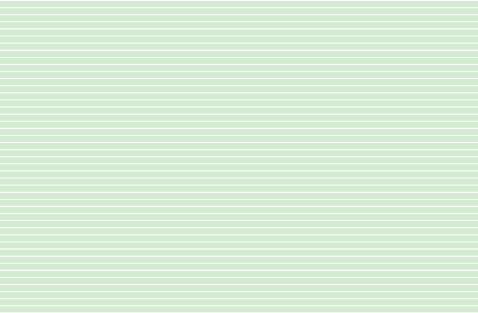
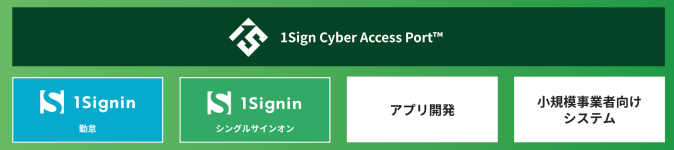
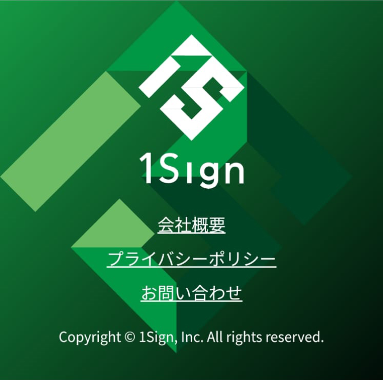

独自のセキュリティ技術とプラットフォームで、企業のDX化を力強く
推進。
それが
です。
Business
/ ビジネス

「人のため」を
、
「社会のため」を、
もっとカンタンに。


1Sign Cyber Access Port™
1Sign Cyber Access Port™ を
活用したビジネス構築、システム開発、アプリ開発をご提案。
・勤怠管理システム
・シングルサインオン

デジタル化が進み便利になる一方で、新たに生まれている「リテラシー格差」と「情報流出」などの課題。1Signは、独自のセキュリティ技術とプラットフォームで、企業のDX化を力強く推進します。
企業にとってインターネットサービスは単なる一サービスではなく、すでに社会インフラになっています。日本は特に人口が減少局面にあるため、インターネット技術を使い、企業リソースを効率よく使うことが不可欠です。
/ ワンサイン サイバーアクセスポート
1Sign Cyber Access Port™ を
活用したビジネス構築、システム開発、アプリ開発をご提案。
・勤怠管理システム
・シングルサインオン
デジタル資産を安全に守るのは当然。
もっと利便性の高いサービスを提供したい。
1Sign株式会社では、AIとSaaSを使ったシステム開発事業を行っています。
ソフトウェアを「所有する」から「利用する」へ。「完成する」から「継続改良
する」へ。チケット制の導入で、よりスピードと利便性を両立しています。
HP制作
ECサイト制作

Interior Database
/ 不動産事業 ※更新中
内装データベースの活用とNFTを用いた取り組み
・自社不動産運用
・内装データベース
・NFTマーケット
テキストはダミーです。1Sign株式会社では、AIとSaaSを使ったシステム開発事業を行っています。
ソフトウェアを「所有する」から「利用する」へ。「完成する」から「継続改良する」へ。チケット制の導入で、よりスピード性と利便性を両立しています。
